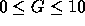

| Safebreaker |
We are observing someone playing the game of Mastermind. The object of this game is to find a secret code by intelligent guess work, assisted by some clues. In this case the secret code is a 4-digit number in the inclusive range from 0000 to 9999, say ``3321''. The player makes a first random guess, say ``1223'' and then, as for each of the future guesses, gets a clue telling him how good his guess is. A clue consists of two numbers: the number of correct digits (in this case 1: the ``2'' at the third position) and the additional number of digits guessed correctly but in the wrong place (in this case 2: the ``1'' and the ``3''). The clue would in this case be: ``1/2''.
Write a program that given a set of guesses and corresponding clues, tries to find the secret code.
The first line of input specifies the number of test cases (N) your program has to process. Each test case consists of a first line containing the number of guesses G (  ), and G subsequent lines consisting of exactly 8 characters: a code of four digits, a blank, a digit indicating the number of correct digits, a `/' and a digit indicating the number of correct but misplaced digits.
For each test case, the output contains a single line saying either:
4 6 9793 0/1 2384 0/2 6264 0/1 3383 1/0 2795 0/0 0218 1/0 1 1234 4/0 1 1234 2/2 2 6428 3/0 1357 3/0
3411 1234 indeterminate impossible